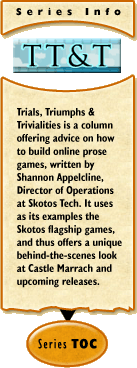

|
Trials, Triumphs & Trivialities #169: Mixing Mediums: An Overviewby Shannon Appelcline As much as possible I try and base this column upon recent issues that I've faced at Skotos. As such, it becomes a true set of "lessons learned" because it's based on real problems and (hopefully) real solutions. However this last week and a half I've been faced with a sort of unique issue because I haven't been dealing with computer games at all, instead I've been dealing with ... comic books. And so I'm going to take that as an inspiration for this weeks column, and return to the topic of the various mediums of creativity (which I broadly covered about two and a half years ago in Trials, Triumphs & Trivialities #98, Forseeing Mediums: An Overview), discuss what I've learned since, talk about my current project, and finally provide some pointers to a lot of my old thoughts on the topic. Before I go any further I should probably offer a reminder on my classic definition of "mediums", which I lifted from the OED. A medium is "an intermediate agency, means, instrument or channel. Also, intermediation, instrumentality: in phrase by or through the medium of spec of newspapers, radio, television, etc., as vehicles of mass communication." In our case, it's mostly prose online games, but other mediums that you're familiar with include movies, TV shows, plays, novels, and ... comic books. The Castle Marrach ComicCastle Marrach, just to catch up anyone who's not familiar with Skotos, was our first online prose game here at Skotos. It's still one of our top two, after The Eternal City. The game itself is set in a fantasy castle that draws upon fairie tales, folklore, and dreamlike high fantasy. I started writing the script for the first issue of a Castle Marrach comic at the very end of 2001. I'm not even sure why anymore, though I'd suspect ultimately that Christopher Allen asked me to. I'd never written a comic script before, but I'd read plenty of them, had taken a class on movie scripts earlier in the year, and even had a few books on comic scripting, so I was game. It looks like I had the script in a fairly solid form a couple of months later. We weren't really sure how to publish it at that point however. I considered just dropping the whole script into one of these TT&Ts, but never did, and ultimately we lost track of the whole idea and the script started to gather dust in its Wiki location. The whole point of the comic, by the by, had been advertising. Both Christopher and I thought that the castle--as designed by Staci Dumoski, Jan & Chaz Engan, Lisa Eichler, Michael Blum, and a number of others who I'm neglecting to include--had a very solid basis in stories, and that was one of the strong foundations of the game. So we figured that by releasing a comic book we could introduce a whole bunch of other people to this fun setting. I think we had some hope too that we could get it picked up by some real comic book company, but that never panned out. Eventually we put the whole thing aside because the finances for producing and publishing a Castle Marrach comic weren't right. Then, last year, we decided to try the same trick with a Lovecraft Country comic, for our new game, just released in beta. Here, the finances made a little more sense, so I wrote a second script, and we started hunting for artists. We eventually, by accident, ended up with two artists, and so we gave one the Lovecraft Country script ... and the other the Castle Marrach script. And so an ancient dream came to life. The script is, I can now see, heavily influenced by Neil Gaiman's work. His pivotal The Sandman had been over for years by the time I wrote the script, but a similarly lyrical storytelling could be found in two follow-up books, The Dreaming and Lucifer. When I first returned to my script in 2004 I cringed a bit at how much it sounds like a Gaiman pastiche, but I suppose we all have to start finding our styles in someone else's, and in the field of comics there's few authors I would have rather emulated. Here's the script for the first couple of panels of the comic: And here's what the comic actually looks like: (click through for full-sized image) (The artist, by the way, is Bob Cram Jr. and he did superb work.) We should be releasing this comic in the next couple of weeks; we're still dotting a couple of i's and crossing some t's, to make sure it has the marketing usefulness that we'd like. After that I've got notes for 5 more issues, completing out the arc, and Christopher has been encouraging me to start on #2. When and if we'll be able to publish it, we'll see. By my next column I should have a link to share for where to get the full comic. Mixing MediumsSo this has all been more blog-gy than my column usually is. It's a pretty big deal for me, having someone put pictures to my writing, and so I'm enthused about it. I also think that it's a neat method of guerilla marketing. However, I also think that there's valuable lessons learned here. First, I hope that it provides some insights into different methods of marketing that you might want to consider. Will this work? Will it draw new people into Castle Marrach? I dunno, but it's worth trying. Second, and more importantly, it shows an important point about what I call "mixing mediums".
Recently I was reading a comic book called DC: The New Frontier, and I was struck by its artistic eye because the comic's book pages were often filled with a stack of three wide panels. Between that and the way that the artist moved the "camera", zooming in and out, it felt like I was reading a movie. In each of these cases I think the creator went beyond just learning lessons from other mediums, and actually adopted the rules of one medium (faerie tales or movies) to another medium (a game or a comic) and by doing so the end result was much more stunning. So that's what made it easy to create a Castle Marrach comic, and that's the sort of thing that you should consider in your own creative endeavors to make them stand out and be more than just another comic or another game. Overviewing MediumsMediums have long been one of my favorite topics in this column, and in fact that this is the second time that I've tried to provide a broad overview with them, with the first being the aforementioned Trials, Triumphs & Trivialities #98, Foreseeing Mediums: An Overview. That earlier article gives some good discussions of how to describe mediums, and also what the strengths and weaknesses of our particular medium are. This time, however, I've talked a bit more about how useful it can be to mesh together two different mediums, to try and make your own game (or whatever) that much more useful. So, to finish up I'm going to provide a quick listing of most of the articles I've written covering other mediums, which you might want to refer back to for ideas of your own:
I haven't included fiction writing on this list because it innately influences most things I write on plotting. My wife's articles on The Elements of Good Storytelling provide an even more intensive look at lessons learned from fiction. So there's a whole batch of mediums to mix; enjoy. [ <— #168: Online Games & The Law, Part Four: Community Rules | #170: Creativity & The Creative Commons —> ] |
 The Castle Marrach comic was relatively easy to write because the game had already been imbued with the elements of storytelling. I've often written in this column that you should try and learn from all sorts of different mediums when you're designing a game, to strengthen you own creative project, and I think Staci knew that innately when she started figuring out who the characters of the Castle were, and why they were there. In other words, the Castle Marrach game has always had a strong basis in storytelling mediums, most particularly faerie tales, legends, and other similar sorts of fiction.
The Castle Marrach comic was relatively easy to write because the game had already been imbued with the elements of storytelling. I've often written in this column that you should try and learn from all sorts of different mediums when you're designing a game, to strengthen you own creative project, and I think Staci knew that innately when she started figuring out who the characters of the Castle were, and why they were there. In other words, the Castle Marrach game has always had a strong basis in storytelling mediums, most particularly faerie tales, legends, and other similar sorts of fiction.
{kind=link}